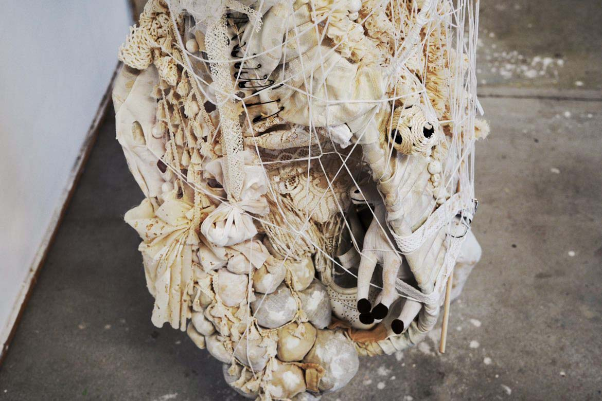
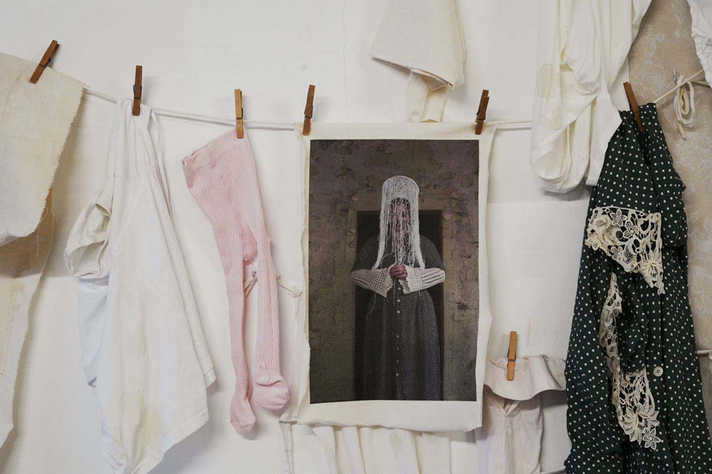
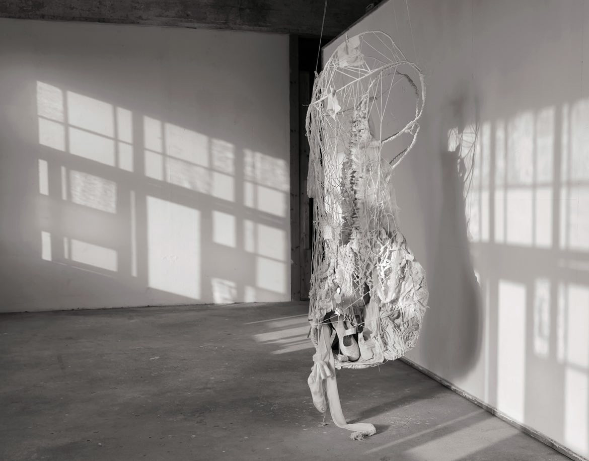
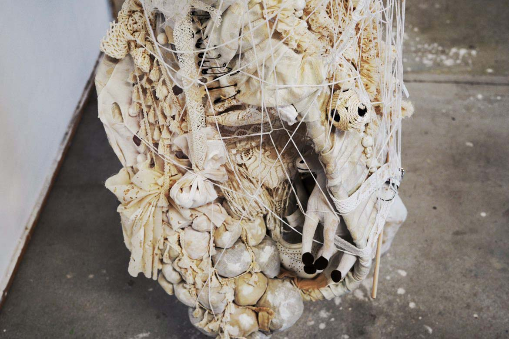
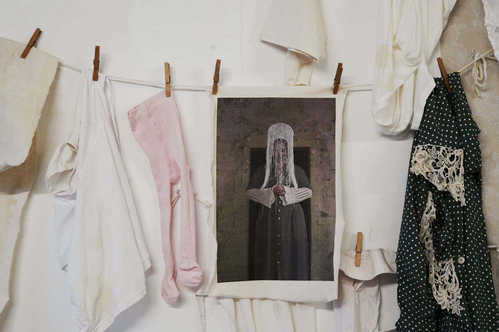
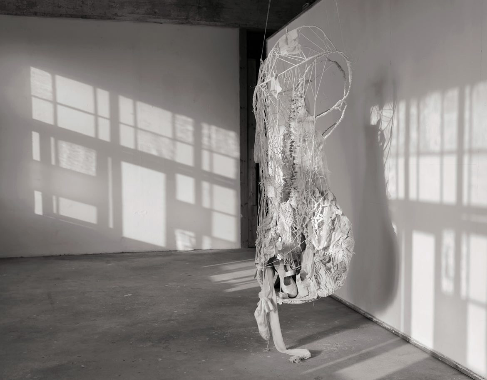

Awards
Reclaim Award Cologne / 2021 Information
Residencies
Pilotenkueche International Art Program
curators Julianne Csapo / maeshelle west-davies
Leipzig / April-June 2022
Photo report
Interview

 






Exhibitions
Group exhibition “Breathing lessons” Roots Gallery curators Nadzeya Naurotskaya Pisa / October 2023
Group exhibition “Fairy Fountain” Co-making matters (Haus der Statistik) Pilotenkueche curators Julianne Csapo / maeshelle west-davies Berlin / August-September 2023
Group exhibition “KAG1” Kyoto Art Gallery curator Akari Sohara Berlin / July 2023
Group exhibition “Haze Bazaar” Haze Gallery curator Irina Rusinovich Berlin / December 2022
Group exhibition “Who you are” ChromArt Gallery curator Georgina Magklara Berlin / November 2022
Solo exhibition am Kulturnacht Ulm Gleis 44 curator Marek S. Bednarsky Ulm / September 2022
Group exhibition “City Crash 10” Werk 2 curator Antje Hamel Leipzig / July 2022
Online group exhibition “Way” Albe Art Gallery February 2022
Group exhibition “Water” Lite-Haus Galerie curator Debbie Davies Berlin / October 2021
Group exhibition “Videofenster” curator Sebastian Hermida Cologne / June 2021
Group exhibition “Mixing Identities” THE LINE Contemporary Art Space London / 2021